SeekSpace细胞通讯分析
原文：https://mp.weixin.qq.com/s?__biz=MzAwMzIzOTk5OQ==&mid=2247511890&idx=1&sn=3457b875cd00b4433f50a39a45e1cb8a&chksm=9b3cd602ac4b5f144ad982dfbdf583b56d1bfb768e4e5f2cc9e5424af6e014e752835fadc8a6#rd 合集：单细胞教程全收录
SeekSpace &Cellchat细胞通讯分析

测试数据可扫码添加微信号获取：
** **
SeekSpace的建库和原理介绍可参考：当空转遇上单细胞~
SeekSpace的基本分析流程可参考：SeekSpace| 会单细胞就会空间转录组
1.1 加载数据
在之前的教程中我们已经预处理好了数据，直接读入即可：
library(Seurat)
library(CellChat)
mouse_brain <- readRDS('data/SeekSpace/mouse_brain_ann.rds')
# 加载设置配色的包：
library(ggsci)
# 分配细胞类型的配色
celltype_col <- c(pal_futurama()(8),pal_jama()(8),pal_lancet()(8))
# 这是一个"单细胞"分辨率的细胞
DimPlot(mouse_brain,
reduction = 'spatial',# 展示空转降维数据
cols = celltype_col,# 细胞颜色
pt.size = 1.5,# 每个细胞的大小
group.by = 'Main.CellType')# 分组变量
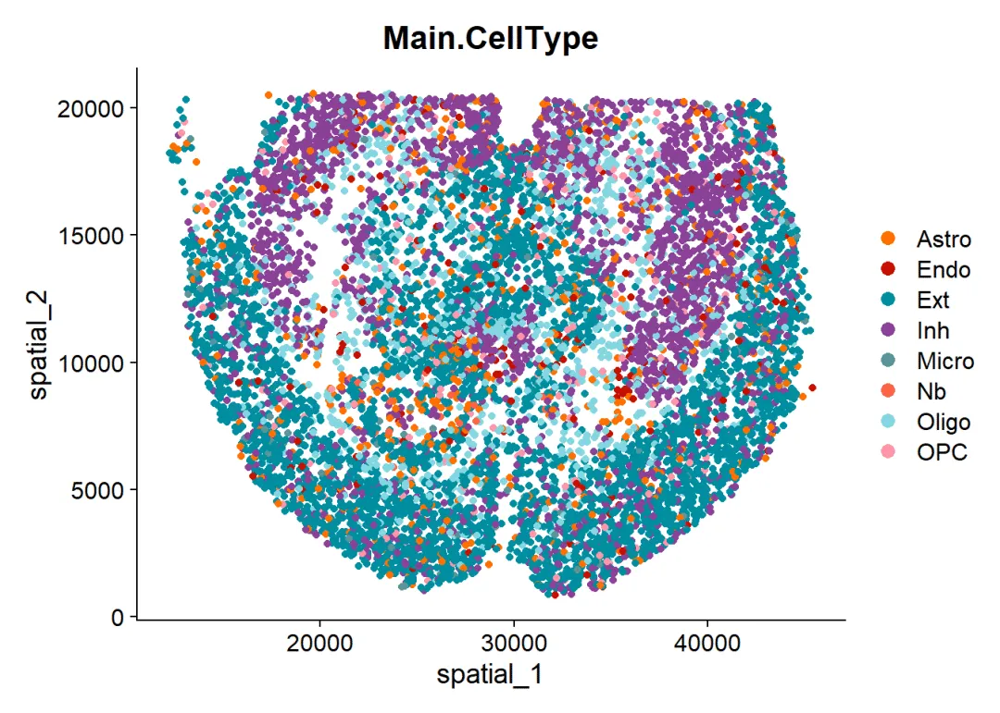
1.2 构建CellChat对象
与利用单细胞数据进行细胞通讯预测一样，这里同样需要输入data.input与meta两个数据：
data.input：空间转录组数据的表达矩阵，行名为基因名，列名为细胞名。CellChat需要使用normalization后的矩阵作为输入数据，如果你的数据仅包含counts矩阵，CellChat也提供了normalizeData函数用于转化。
meta：行名为细胞名的注释数据，每一列是一种注释信息，与单细胞不同的是，空转这里需要有一列名为samples的数据用于区分样本，否则各样本之间的空转坐标可能会互相干扰。需要注意的是，不同分组的空间转录组数据需要分别构建CellChat对象。
# 取出表达数据：
data.input <- Seurat::GetAssayData(mouse_brain, slot = "data", assay = "RNA")
# 取出注释数据：
meta <- mouse_brain@meta.data
# 添加切片信息：
meta$slices <- "slice1"
meta$slices <- factor(meta$slices)
# 取出空间坐标:
emb <- Embeddings(mouse_brain, reduction = "spatial")
colnames(emb) <- c("imagerow", "imagecol")
emb <- as.data.frame(emb)
emb <- emb[!is.na(emb$imagerow), ]
# 取出具有空间坐标的表达数据：
data.input <- data.input[, rownames(emb)]
# 取出具有空间坐标的注释信息：
meta <- meta[rownames(emb), ]
# 构建Cellchat对象：
cellchat <- createCellChat(
object = data.input,# 表达矩阵
meta = meta,# 注释数据
group.by = 'Main.CellType',# 分组信息
datatype = "spatial",# 数据类型，这里是空转数据
coordinates = emb,# 坐标数据
spatial.factors = data.frame(ratio = 0.265, tol = 5)# SeekSpace的缩放因子就不用大家计算啦，这里有现成的
)
## [1] "Create a CellChat object from a data matrix"
## Create a CellChat object from spatial transcriptomics data...
## Set cell identities for the new CellChat object
## The cell groups used for CellChat analysis are Astro, Endo, Ext, Inh, Micro, Nb, Oligo, OPC
1.3 加载配受体数据库
CellChat会基于配受体对数据库(CellChatDB)来识别过表达的配体与受体从而进行下游细胞通讯分析，目前CellChatDB已经更新到V2(比V1新增约1000个蛋白质/非蛋白质互作，例如代谢或突出信号。)，由作者人工收集具有文献支撑的人类、小鼠配受体互作关系，其中包含大约3300对互作关系：40%的分泌自分泌/旁分泌信号相互作用、17%的细胞外基质受体互作和13%的细胞-细胞接触互作和30%的非蛋白质信号。此外CellChatDB V2提供了注释配受体对的功能，例如利用UniProtKB注释配受体对的生物学过程、分子功能、功能分类、亚细胞定位、神经递质关联等信息。
# 加载数据库：
CellChatDB <- CellChatDB.mouse # 这里我们用的是小鼠数据，如果需要用人的，换成CellChatDB.human即可
# 展示数据分类
showDatabaseCategory(CellChatDB)
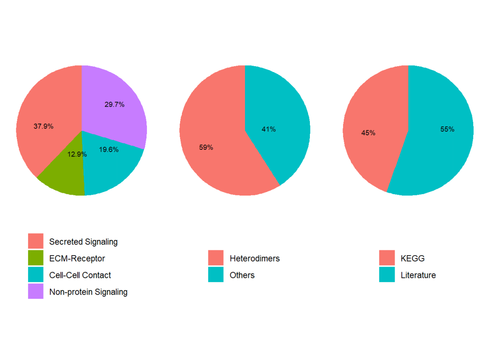
# 查看详细配受体对：
dplyr::glimpse(CellChatDB$interaction)# 利用glimpse函数快速浏览数据框结构
## Rows: 3,379
## Columns: 28
## $ interaction_name <chr> "TGFB1_TGFBR1_TGFBR2", "TGFB2_TGFBR1_TGFBR2",…
## $ pathway_name <chr> "TGFb", "TGFb", "TGFb", "TGFb", "TGFb", "TGFb…
## $ ligand <chr> "Tgfb1", "Tgfb2", "Tgfb3", "Tgfb1", "Tgfb1", …
## $ receptor <chr> "TGFbR1_R2", "TGFbR1_R2", "TGFbR1_R2", "ACVR1…
## $ agonist <chr> "TGFb agonist", "TGFb agonist", "TGFb agonist…
## $ antagonist <chr> "TGFb antagonist", "TGFb antagonist", "TGFb a…
## $ co_A_receptor <chr> "", "", "", "", "", "", "", "", "", "", "", "…
## $ co_I_receptor <chr> "TGFb inhibition receptor", "TGFb inhibition …
## $ evidence <chr> "KEGG: mmu04350", "KEGG: mmu04350", "KEGG: mm…
## $ annotation <chr> "Secreted Signaling", "Secreted Signaling", "…
## $ interaction_name_2 <chr> "Tgfb1 - (Tgfbr1+Tgfbr2)", "Tgfb2 - (Tgfbr1+…
## $ is_neurotransmitter <lgl> FALSE, FALSE, FALSE, FALSE, FALSE, FALSE, FAL…
## $ ligand.symbol <chr> "Tgfb1", "Tgfb2", "Tgfb3", "Tgfb1", "Tgfb1", …
## $ ligand.family <chr> "TGF-beta", "TGF-beta", "TGF-beta", "TGF-beta…
## $ ligand.location <chr> "Extracellular matrix, Secreted, Extracellula…
## $ ligand.keyword <chr> "Disease variant, Signal, Reference proteome,…
## $ ligand.secreted_type <chr> "growth factor", "growth factor", "cytokine;g…
## $ ligand.transmembrane <lgl> FALSE, FALSE, TRUE, FALSE, FALSE, FALSE, FALS…
## $ receptor.symbol <chr> "Tgfbr1, Tgfbr2", "Tgfbr1, Tgfbr2", "Tgfbr1, …
## $ receptor.family <chr> "Protein kinase superfamily, TKL Ser/Thr prot…
## $ receptor.location <chr> "Cell membrane, Secreted, Membrane raft, Cell…
## $ receptor.keyword <chr> "Membrane, Secreted, Disulfide bond, Kinase, …
## $ receptor.surfaceome_main <chr> "Receptors", "Receptors", "Receptors", "Recep…
## $ receptor.surfaceome_sub <chr> "Act.TGFB;Kinase", "Act.TGFB;Kinase", "Act.TG…
## $ receptor.adhesome <chr> "", "", "", "", "", "", "", "", "", "", "", "…
## $ receptor.secreted_type <chr> "", "", "", "", "", "", "", "", "", "", "", "…
## $ receptor.transmembrane <lgl> TRUE, TRUE, TRUE, TRUE, TRUE, TRUE, TRUE, TRU…
## $ version <chr> "CellChatDB v1", "CellChatDB v1", "CellChatDB…
# 取出想要参与细胞通讯的互作类型子集：
CellChatDB.use <- subsetDB(CellChatDB, search = "Secreted Signaling", key = "annotation") # search的选项在以下中找："Secreted Signaling" "ECM-Receptor" "Cell-Cell Contact" "Non-protein Signaling"
# 添加至cellchat对象中去
cellchat@DB <- CellChatDB.use
# 如果你需要全部数据库参与下游的细胞通讯计算：
cellchat@DB <- CellChatDB
1.4 表达数据预处理
为了参与下游的细胞通讯分析，CellChat需要先计算出各类型的过表达配体/受体，与单细胞部分一样，CellChat也提供函数将RNA表达矩阵转换为蛋白质互作网络。这个过程中会评估基因的离散度来过滤掉零表达或测序深度不足的基因。
# 安装presto
if(!require(presto))devtools::install_github('immunogenomics/presto')# 加速过表达基因计算的Wilcoxon Test过程
# 如果你上面用的是全部细胞通讯数据库，那么需要先subset一下数据
cellchat <- subsetData(cellchat)
# 设置并行计算：
makecore <- function(workcore,memory){
if(!require(Seurat))install.packages('Seurat')
if(!require(future))install.packages('future')
plan("multisession", workers = workcore)
options(future.globals.maxSize= memory*1024*1024**2)
}
makecore(4,8)#这里以4线程,8GB内存为例，
# 过表达基因评估：
cellchat <- identifyOverExpressedGenes(cellchat)
# 过表达互作关系评估：
cellchat <- identifyOverExpressedInteractions(cellchat, variable.both = F)# 如果variable.both =T ，则需要配体和受体均过表达，才可以算作过表达配受体对
## The number of highly variable ligand-receptor pairs used for signaling inference is 3014
# 如果你需要将RNA矩阵转换为蛋白质互作网络参与下游计算，可运行：
# cellchat <- projectData(cellchat, PPI.mouse) # 计算人类数据使用PPI.human
1.5 细胞通讯网络推断
CellChat能够通过排列检验评估每个配受体对的互作可能性，并推算出具有生物学意义(考虑配体信号、受体、辅因子的参与)的细胞通讯。
# 计算细胞通讯的可能性，一个函数就可以搞定
cellchat <- computeCommunProb(cellchat, # 上面预处理过的CellChat对象
type = "truncatedMean", # trimean更加的严格，仅保留互作作用强的配受体对。这里用truncatedMean配合trim修剪值得设置，可以放宽阈值
trim = 0.1,# truncatedMean值小于这个值的配受体对会被过滤
distance.use = TRUE, # 计算细胞通讯时是否考虑细胞得距离，显然在空间转录组数据中这里需要选True
interaction.range = 250, # 单位为微米，这个范围内的互作关系才被考虑
scale.distance = 0.1,# 距离缩放因子，保证缩放后的距离在1~2之间
contact.dependent = TRUE, # 细胞之间存在相互接触的配受体对被保留
contact.range = 100# 设置细胞接触的距离，单位为微米，这里设置的距离大约等于细胞直径
)
## truncatedMean is used for calculating the average gene expression per cell group.
## [1] ">>> Run CellChat on spatial transcriptomics data using distances as constraints of the computed communication probability <<< [2024-05-27 17:20:41.942334]"
## The input L-R pairs have both secreted signaling and contact-dependent signaling. Run CellChat in a contact-dependent manner for `Cell-Cell Contact` signaling, and in a diffusion manner based on the `interaction.range` for other L-R pairs.
## [1] ">>> CellChat inference is done. Parameter values are stored in `object@options$parameter` <<< [2024-05-27 18:33:16.893058]"
# 计算时间相较于前面几种数据集更长一些
# 过滤掉不足10个细胞的细胞类型：
cellchat <- filterCommunication(cellchat, min.cells = 10)
# 取出细胞通讯预测的结果：
df.net <- subsetCommunication(cellchat)
# 返回的是一个数据框：
head(df.net)
## source target ligand receptor prob pval interaction_name
## 1 Endo Ext Bmp6 ACVR1_BMPR2 2.822750e-05 0 BMP6_ACVR1_BMPR2
## 2 Endo Inh Bmp6 ACVR1_BMPR2 9.168189e-06 0 BMP6_ACVR1_BMPR2
## 3 Endo Nb Bmp6 ACVR1_BMPR2 8.443069e-06 0 BMP6_ACVR1_BMPR2
## 4 Endo Ext Bmp7 ACVR1_BMPR2 3.289720e-06 0 BMP7_ACVR1_BMPR2
## 5 Endo Inh Bmp7 ACVR1_BMPR2 1.068157e-06 0 BMP7_ACVR1_BMPR2
## 6 Endo Nb Bmp7 ACVR1_BMPR2 9.839900e-07 0 BMP7_ACVR1_BMPR2
## interaction_name_2 pathway_name annotation
## 1 Bmp6 - (Acvr1+Bmpr2) BMP Secreted Signaling
## 2 Bmp6 - (Acvr1+Bmpr2) BMP Secreted Signaling
## 3 Bmp6 - (Acvr1+Bmpr2) BMP Secreted Signaling
## 4 Bmp7 - (Acvr1+Bmpr2) BMP Secreted Signaling
## 5 Bmp7 - (Acvr1+Bmpr2) BMP Secreted Signaling
## 6 Bmp7 - (Acvr1+Bmpr2) BMP Secreted Signaling
## evidence
## 1 KEGG: mmu04350; PMID:26893264
## 2 KEGG: mmu04350; PMID:26893264
## 3 KEGG: mmu04350; PMID:26893264
## 4 KEGG: mmu04350; PMID:26893264
## 5 KEGG: mmu04350; PMID:26893264
## 6 KEGG: mmu04350; PMID:26893264
# 这样大家可以指定某一列的某一个值进行过滤，比如这里我们过滤得到细胞通讯来源为oligo的数据：
filter(df.net,source == 'Oligo') %>% head()
## source target ligand receptor prob pval interaction_name
## 1 Oligo Astro Fgf1 Fgfr1 1.358623e-05 0 FGF1_FGFR1
## 2 Oligo Endo Fgf1 Fgfr1 4.185820e-06 0 FGF1_FGFR1
## 3 Oligo Nb Fgf1 Fgfr1 4.877755e-06 0 FGF1_FGFR1
## 4 Oligo Astro Fgf1 Fgfr2 1.962416e-06 0 FGF1_FGFR2
## 5 Oligo Endo Fgf1 Fgfr2 1.525583e-05 0 FGF1_FGFR2
## 6 Oligo Ext Fgf1 Fgfr2 2.973175e-06 0 FGF1_FGFR2
## interaction_name_2 pathway_name annotation evidence
## 1 Fgf1 - Fgfr1 FGF Secreted Signaling PMC: 4393358
## 2 Fgf1 - Fgfr1 FGF Secreted Signaling PMC: 4393358
## 3 Fgf1 - Fgfr1 FGF Secreted Signaling PMC: 4393358
## 4 Fgf1 - Fgfr2 FGF Secreted Signaling PMC: 4393358
## 5 Fgf1 - Fgfr2 FGF Secreted Signaling PMC: 4393358
## 6 Fgf1 - Fgfr2 FGF Secreted Signaling PMC: 4393358
# 从信号通路的角度进行细胞通讯预测：
cellchat <- computeCommunProbPathway(cellchat)
# 整合细胞通讯数据，进行link的统计与通讯可能性的评估：
cellchat <- aggregateNet(cellchat)
1.6 可视化
空间转录组的可视化这里可以做许多与单细胞部分相同的可视化，具体可以参考：单细胞CellChat视频教程(https://www.bilibili.com/video/BV1Ab4y1W7qx?p=3&vd_source=6335356a0d3631ad476b7c7de83892db)
展示总体细胞的互作数量(左)与互作强度(右)：
# 统计细胞数量大小：
groupSize <- as.numeric(table(cellchat@idents))
# 设置布局，一共绘制两张图片，横向排列：
par(mfrow = c(1,2), xpd=TRUE)
# 绘制细胞间的互作数量：
netVisual_circle(cellchat@net$count, vertex.weight = rowSums(cellchat@net$count), weight.scale = T, label.edge= F, title.name = "Number of interactions")
# 绘制细胞间的互作强度：
netVisual_circle(cellchat@net$weight, vertex.weight = rowSums(cellchat@net$weight), weight.scale = T, label.edge= F, title.name = "Interaction weights/strength")
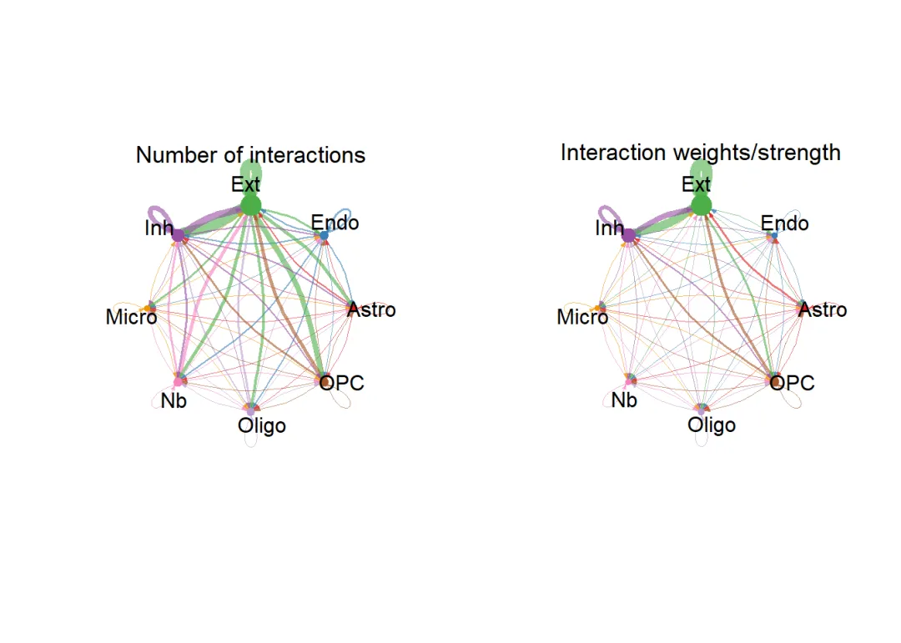
绘制细胞间通讯数量的热图：
netVisual_heatmap(cellchat, measure = "count", color.heatmap = "Blues")# 颜色可以填Reds
## Do heatmap based on a single object
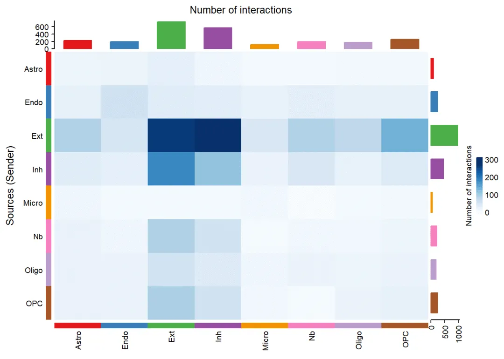
绘制细胞间通讯强度/权重的热图：
netVisual_heatmap(cellchat, measure = "weight", color.heatmap = "Reds")# 看一下红色色系的效果
## Do heatmap based on a single object
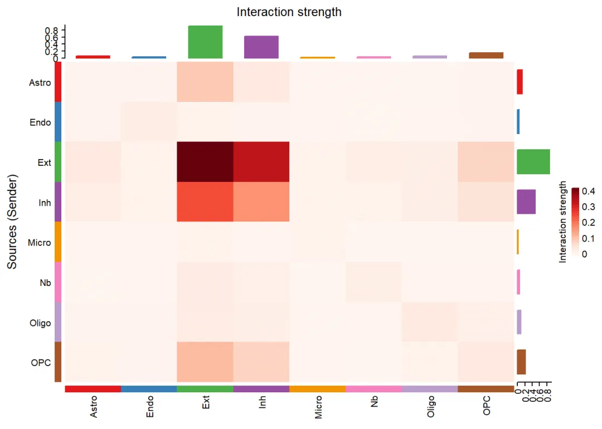
指定通路进行”圈图”展示：
# 查看数据中预测到的通讯通路名称：
unique(cellchat@netP$pathways)
## [1] "NRXN" "ADGRL" "Glutamate" "PTPR" "GABA-B"
## [6] "NCAM" "NRG" "CADM" "CypA" "NEGR"
## [11] "MAG" "CNTN" "APP" "GABA-A" "ADGRB"
## [16] "PTN" "LAMININ" "SEMA6" "PTPRM" "PSAP"
## [21] "IGF" "ApoE" "NGL" "Cholesterol" "EPHB"
## [26] "CLDN" "TENASCIN" "EPHA" "VEGF" "UNC5"
## [31] "CX3C" "COLLAGEN" "GAS" "SEMA4" "SLITRK"
## [36] "SLIT" "NECTIN" "CDH" "MPZ" "PECAM1"
## [41] "SEMA7" "2-AG" "ADGRE" "CD39" "GRN"
## [46] "TULP" "Netrin" "PDGF" "SEMA3" "HSPG"
## [51] "FLRT" "SEMA5" "FGF" "CSF" "AGRN"
## [56] "FN1" "NOTCH" "L1CAM" "RELN" "GAP"
## [61] "BMP" "CSPG4" "MK" "JAM" "VISTA"
## [66] "WNT" "Testosterone"
# 选择展示通路
pathways.show <- c("NRXN")
# 设置画布绘制一张图：
par(mfrow=c(1,1), xpd = TRUE) # `xpd = TRUE` should be added to show the title
netVisual_aggregate(cellchat, signaling = pathways.show, layout = "circle")
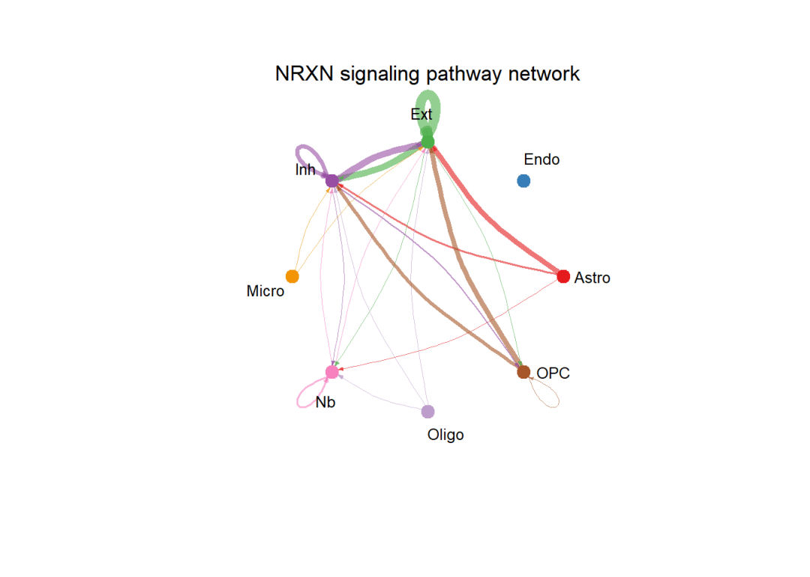
设置布局layout为spatial，即可绘制带有空间坐标的细胞通讯图片，从下图可以看出netVisual_aggregate函数会在空间切片上找到细胞类型的中心位置，并标上细胞之间的通讯作用。
par(mfrow=c(1,1))
netVisual_aggregate(cellchat, signaling = pathways.show, layout = "spatial", edge.width.max = 2, vertex.size.max = 1, alpha.image = 0.2, vertex.label.cex = 3.5)
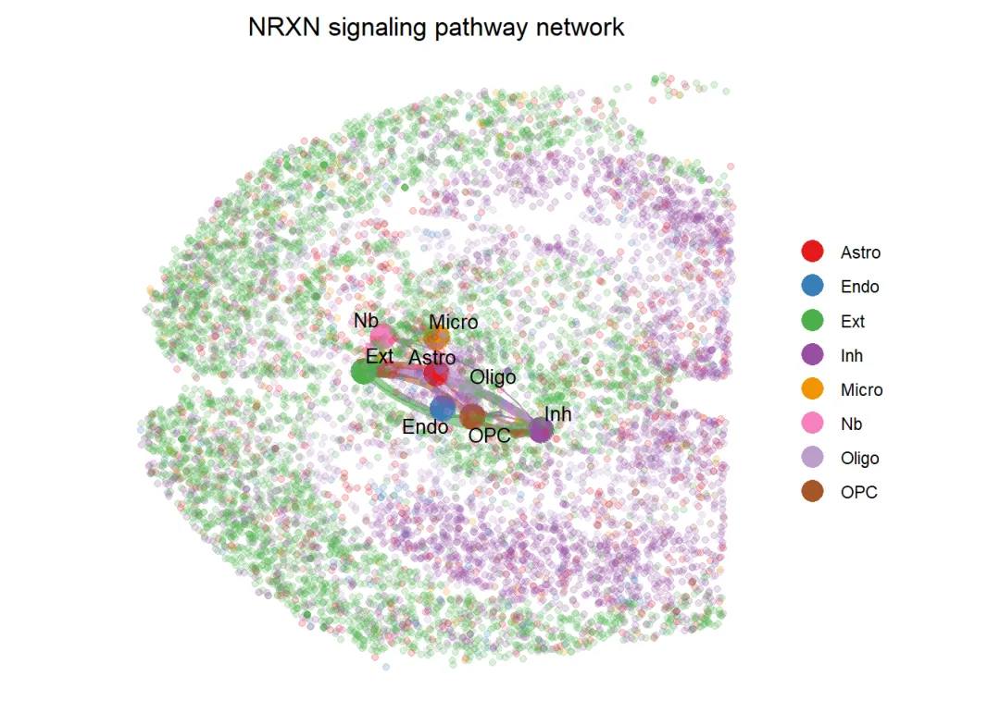
与单细胞部分一样，在空间转录组数据的计算中，CellChat支持各细胞类型在对应通讯通路中所扮演角色(Sender,Receiver,Mediator,Influence)的可能性计算：
# 计算数值：
cellchat <- netAnalysis_computeCentrality(cellchat, slot.name = "netP") # the slot 'netP' means
# 用热图绘制
par(mfrow=c(1,1))
netAnalysis_signalingRole_network(cellchat, signaling = pathways.show, width = 8, height = 2.5, font.size = 10)
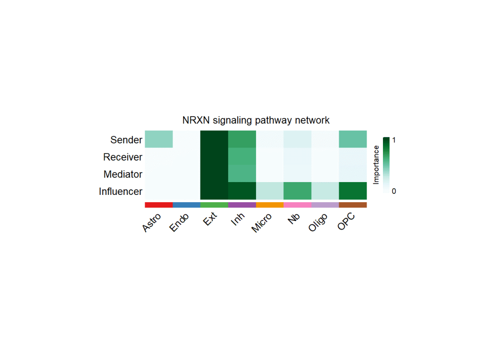
展示对应通路中配受体的基因表达量：
# 想要绘制的通路：
pathways.show
## [1] "NRXN"
# 找出属于该通路的配体：
my_ligand <- filter(df.net,pathway_name==pathways.show) %>% pull('ligand') %>% unique()
my_ligand
## [1] "Nrxn1" "Nrxn2" "Nrxn3"
# 找出属于该通路的受体：
my_receptor <- filter(df.net,pathway_name==pathways.show) %>% pull('receptor') %>% unique()
my_receptor
## [1] "Nlgn1" "Nlgn2" "Nlgn3" "Clstn1" "Clstn2" "Clstn3" "Dag1" "Lrrtm3"
## [9] "Lrrtm4"
# 绘制配体：
spatialFeaturePlot(cellchat, features = my_ligand, point.size = 0.8, color.heatmap = "Reds", direction = 1)
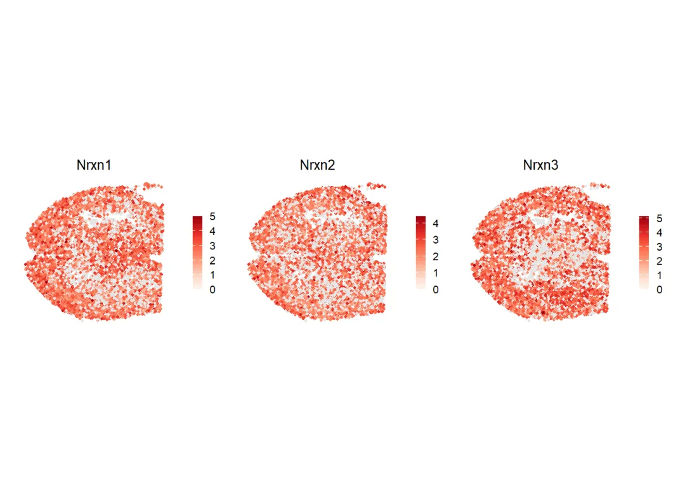
# 绘制受体：
spatialFeaturePlot(cellchat, features = my_receptor, point.size = 0.8, color.heatmap = "Reds", direction = 1)
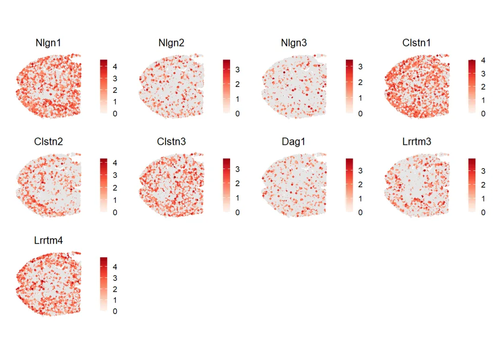
# 可以与细胞类型的分布情况做对比：
spatialDimPlot(cellchat,point.size = 0.8)
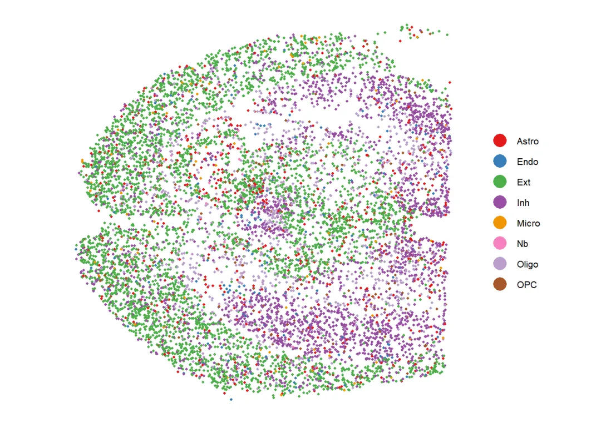
此外，CellChat还支持绘制指定配受体对的基因表达情况
# 筛选出对应通路的配受体对名称
inter_name <- filter(df.net,pathway_name==pathways.show) %>% pull('interaction_name') %>% unique()
# 我们选择其中的一个配受体对：
inter_name[1]
## [1] NRXN1_NLGN1
## 3014 Levels: TGFB1_TGFBR1_TGFBR2 TGFB2_TGFBR1_TGFBR2 ... VCAM1_INTEGRIN_ADB2
# 绘图
spatialFeaturePlot(cellchat,
pairLR.use = as.character(inter_name[1]), # 选择的配受体对
point.size = 1,
do.binary = TRUE, # 将配受体的表达量按照"表达"与"不表达"的二分类方式进行展示
cutoff = 0.05, enriched.only = F, color.heatmap = "Reds", direction = 1)
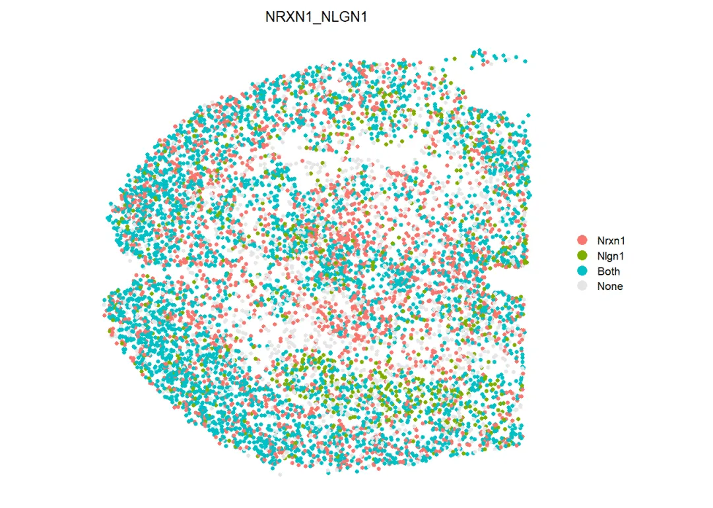
可以看到Igf1与Igf1r这对配受体在空间中的表达情况，由于设置了binary，因此只有Nrxn1表达、Nlgn1表达、二者均表达、二者均不表达 这几个分类选项。
3.7 交互式操作
比较智能的是，Cellchat提供交互式的可视化，大家可以自行探索一下：
# 加载依赖包：
if(!require(bsicons))install.packages("bsicons")
# 启动交互式App：
runCellChatApp(cellchat)
# rmarkdown里不能启动shiny，这里我就不运行了
弹出的窗口页面如下，大家可以自行探索一番：
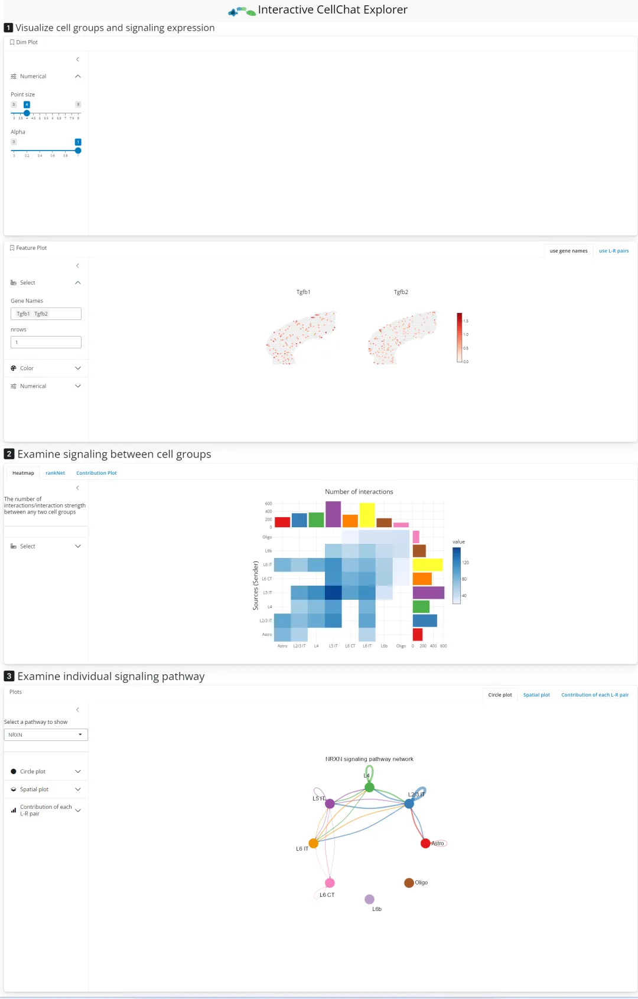
3.8 环境信息
sessionInfo()
## R version 4.3.0 (2023-04-21 ucrt)
## Platform: x86_64-w64-mingw32/x64 (64-bit)
## Running under: Windows 11 x64 (build 22621)
##
## Matrix products: default
##
##
## locale:
## [1] LC_COLLATE=Chinese (Simplified)_China.utf8
## [2] LC_CTYPE=Chinese (Simplified)_China.utf8
## [3] LC_MONETARY=Chinese (Simplified)_China.utf8
## [4] LC_NUMERIC=C
## [5] LC_TIME=Chinese (Simplified)_China.utf8
##
## time zone: Asia/Shanghai
## tzcode source: internal
##
## attached base packages:
## [1] stats graphics grDevices utils datasets methods base
##
## other attached packages:
## [1] ggsci_3.0.3 future_1.33.1
## [3] presto_1.0.0 data.table_1.15.2
## [5] Rcpp_1.0.12 stxBrain.SeuratData_0.1.1
## [7] ssHippo.SeuratData_3.1.4 panc8.SeuratData_3.0.2
## [9] ifnb.SeuratData_3.1.0 SeuratData_0.2.2.9001
## [11] patchwork_1.2.0 CellChat_2.1.2
## [13] Biobase_2.62.0 BiocGenerics_0.48.1
## [15] ggplot2_3.5.0 igraph_2.0.3
## [17] dplyr_1.1.4 sna_2.7-2
## [19] network_1.18.2 statnet.common_4.9.0
## [21] Seurat_5.0.3 SeuratObject_5.0.1
## [23] sp_2.1-3 shiny_1.8.0
##
## loaded via a namespace (and not attached):
## [1] RcppAnnoy_0.0.22 splines_4.3.0 later_1.3.2
## [4] tibble_3.2.1 polyclip_1.10-6 ggnetwork_0.5.13
## [7] fastDummies_1.7.3 lifecycle_1.0.4 rstatix_0.7.2
## [10] doParallel_1.0.17 globals_0.16.3 lattice_0.21-8
## [13] MASS_7.3-58.4 backports_1.4.1 magrittr_2.0.3
## [16] plotly_4.10.4 sass_0.4.9 rmarkdown_2.26
## [19] jquerylib_0.1.4 yaml_2.3.8 httpuv_1.6.14
## [22] NMF_0.27 sctransform_0.4.1 spam_2.10-0
## [25] spatstat.sparse_3.0-3 reticulate_1.35.0 cowplot_1.1.3
## [28] pbapply_1.7-2 RColorBrewer_1.1-3 abind_1.4-5
## [31] Rtsne_0.17 purrr_1.0.2 rappdirs_0.3.3
## [34] circlize_0.4.16 IRanges_2.36.0 S4Vectors_0.40.2
## [37] ggrepel_0.9.5 irlba_2.3.5.1 listenv_0.9.1
## [40] spatstat.utils_3.0-4 openintro_2.4.0 airports_0.1.0
## [43] goftest_1.2-3 RSpectra_0.16-1 spatstat.random_3.2-3
## [46] fitdistrplus_1.1-11 parallelly_1.37.1 svglite_2.1.3
## [49] leiden_0.4.3.1 codetools_0.2-19 tidyselect_1.2.1
## [52] shape_1.4.6.1 farver_2.1.1 matrixStats_1.2.0
## [55] stats4_4.3.0 spatstat.explore_3.2-6 jsonlite_1.8.8
## [58] GetoptLong_1.0.5 BiocNeighbors_1.20.2 ellipsis_0.3.2
## [61] progressr_0.14.0 ggridges_0.5.6 ggalluvial_0.12.5
## [64] survival_3.5-5 iterators_1.0.14 systemfonts_1.0.6
## [67] foreach_1.5.2 tools_4.3.0 ica_1.0-3
## [70] glue_1.7.0 gridExtra_2.3 xfun_0.42
## [73] withr_3.0.0 fastmap_1.1.1 fansi_1.0.6
## [76] digest_0.6.35 R6_2.5.1 mime_0.12
## [79] colorspace_2.1-0 Cairo_1.6-2 scattermore_1.2
## [82] tensor_1.5 spatstat.data_3.0-4 utf8_1.2.4
## [85] tidyr_1.3.1 generics_0.1.3 usdata_0.2.0
## [88] FNN_1.1.4 httr_1.4.7 htmlwidgets_1.6.4
## [91] uwot_0.1.16 pkgconfig_2.0.3 gtable_0.3.4
## [94] registry_0.5-1 ComplexHeatmap_2.18.0 lmtest_0.9-40
## [97] htmltools_0.5.7 carData_3.0-5 dotCall64_1.1-1
## [100] clue_0.3-65 scales_1.3.0 png_0.1-8
## [103] knitr_1.45 rstudioapi_0.16.0 tzdb_0.4.0
## [106] reshape2_1.4.4 rjson_0.2.21 coda_0.19-4.1
## [109] nlme_3.1-162 cachem_1.0.8 zoo_1.8-12
## [112] GlobalOptions_0.1.2 stringr_1.5.1 KernSmooth_2.23-20
## [115] parallel_4.3.0 miniUI_0.1.1.1 pillar_1.9.0
## [118] grid_4.3.0 vctrs_0.6.5 RANN_2.6.1
## [121] promises_1.2.1 ggpubr_0.6.0 car_3.1-2
## [124] xtable_1.8-4 cluster_2.1.4 evaluate_0.23
## [127] readr_2.1.5 cli_3.6.2 compiler_4.3.0
## [130] rlang_1.1.3 crayon_1.5.2 rngtools_1.5.2
## [133] future.apply_1.11.1 ggsignif_0.6.4 labeling_0.4.3
## [136] plyr_1.8.9 stringi_1.8.3 viridisLite_0.4.2
## [139] deldir_2.0-4 gridBase_0.4-7 BiocParallel_1.36.0
## [142] munsell_0.5.0 lazyeval_0.2.2 spatstat.geom_3.2-9
## [145] Matrix_1.6-5 RcppHNSW_0.6.0 hms_1.1.3
## [148] highr_0.10 ROCR_1.0-11 broom_1.0.5
## [151] memoise_2.0.1 bslib_0.6.1 cherryblossom_0.1.0
## used (Mb) gc trigger (Mb) max used (Mb)
## Ncells 6969046 372.2 11802000 630.3 11802000 630.3
## Vcells 335282440 2558.1 666623260 5086.0 4738018228 36148.3
更多教程，敬请期待！
学习手册
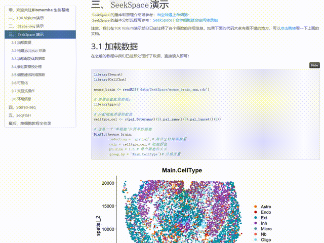
与以往的教程一样，我们给大家准备了SeekSpace数据分析的学习手册及对应测试文件，大家可以添加企业微信回复关键字"SeekSpace学习手册 "即领:
分析集锦：
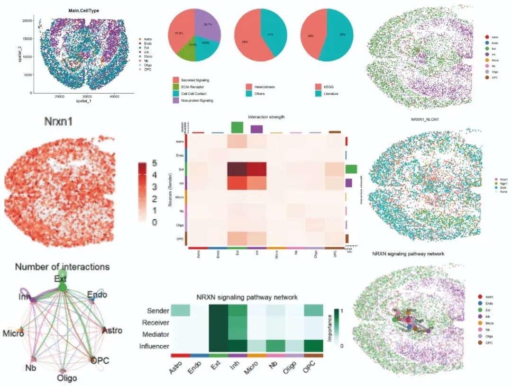
下载内容包括：
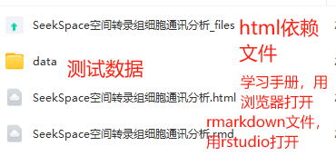
为了进一步推动单细胞科研的发展，寻因生物推出了“2024 寻因Space行知计划 ”，愿与行知者携手，一直游到海水变蓝。
该计划内容涵盖：
前1000例样本的研究助力；
2个方向：单细胞空间图谱、关键的生物学问题；
3项助力：样本投入及价格活动、送单细胞云平台免费分析
填写报名表单，参与行知计划